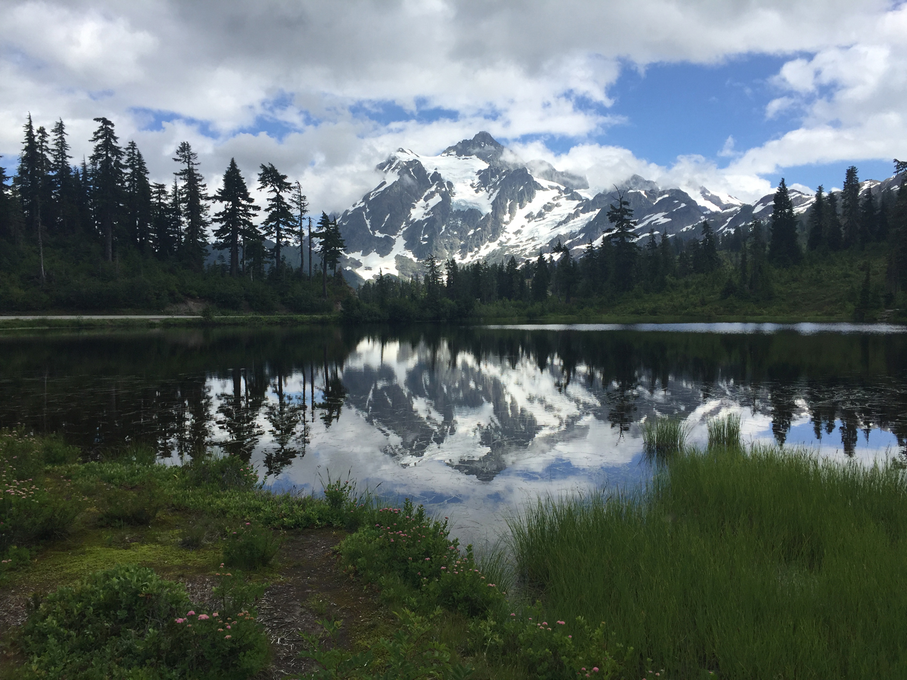
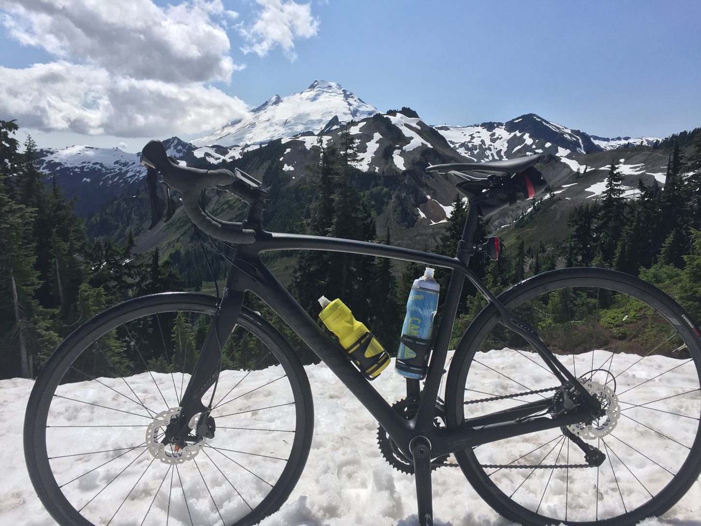

Mt. Baker Highway
North Cascades, Washington
Elevation Gain
4,908ft.
Distance
48 mi.
Ride Type
Road
Into the heart of the North Cascades and to the end of the Mt. Baker Highway, this routes offers some of the best cycling the state of Washington has to offer. This minimally trafficked road is often bordered with snow well into July. Manageable gradients on the ascent allow for riders to take in the views of Mt Shuksan along the way. Start and finish your ride in Glacier, WA where you'll find a number of food and drink options to finish out your day.

location_on Mt. Shuksan seen from Picture Lake, Mt. Baker Highway

location_on Mt. Shuksan seen from Mt. Baker Highway
